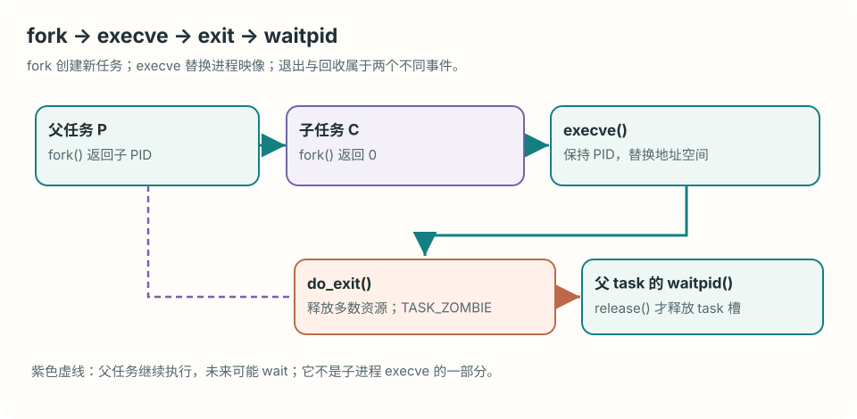
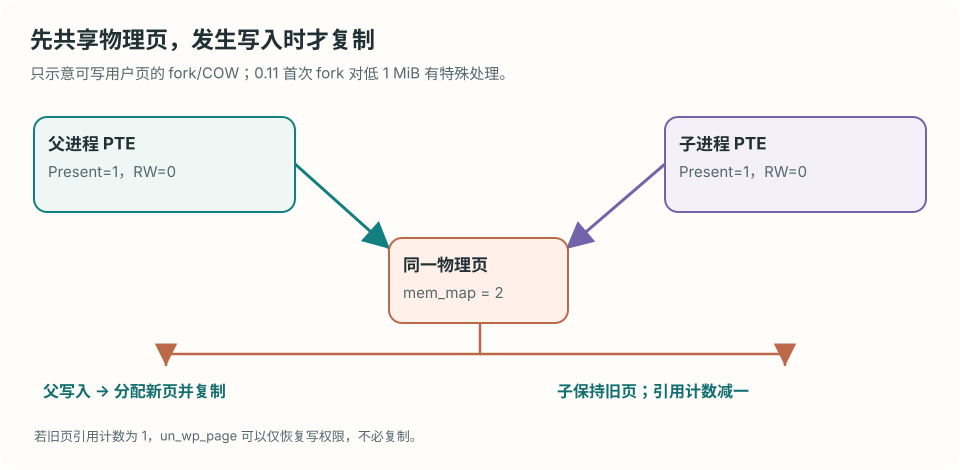

fork、execve、exit 与 waitpid：任务如何诞生和消失
用真实调用链区分创建进程、替换进程映像、退出变僵尸和父进程最终回收四个事件；深入理解共享页与引用计数。
生命周期 · fork / COW / wait为什么 exit() 后进程还会存在？
某个用户程序调用 exit(7) 后，CPU 不再执行它的普通指令，但它的 PID 与退出状态仍可能被 waitpid 看见。这并不矛盾：Linux 0.11 的 do_exit() 释放地址映射和大部分资源后，先将任务状态设为 TASK_ZOMBIE，等父任务取走退出信息才 release() 释放任务槽。
同样，execve() 不是新建进程，而是同一个任务更换程序映像。这四个动词是一条因果链，却发生在不同的源码文件中。

fork 的入口：汇编与 C 不在同一个文件
原版 kernel/system_call.s 中，系统调用号 2 的专用汇编入口 _sys_fork 保存寄存器，调用 _find_empty_process 获取任务槽，然后跳到 _copy_process。它并非旧文中单独放在 kernel/fork.c 的完整 C 函数 sys_fork()。
kernel/fork.c 的 copy_process(nr, ...) 首先申请一页物理内存保存任务结构和内核栈，复制当前 task_struct，然后在任务尚未就绪时修改其状态、PID、父 PID、计数器和 TSS。子任务的 TSS.EAX 被设为 0，而父任务通过 C 处理返回 last_pid；这就是两个返回值不同的直接来源。
p = (struct task_struct *) get_free_page();
task[nr] = p;
*p = *current;
p->state = TASK_UNINTERRUPTIBLE;
p->pid = last_pid;
p->father = current->pid;
p->tss.eax = 0;
/* ... copy_mem、文件/inode 引用与 TSS/LDT 描述符 ... */
p->state = TASK_RUNNING;
return last_pid;fork 复制什么、不复制什么？
新任务的 TSS 保存用户 EIP/ESP、段寄存器和新任务 LDT 选择子。copy_mem() 使用每任务线性基址 nr × 0x4000000，调用 copy_page_tables(from,to,size) 创建新的页表，而不是把所有用户数据的 4KiB 物理页立刻逐页拷贝。新旧 PTE 指向同一页时，映射会改为只读，并相应增加 mem_map 引用计数。

文件也不会凭空复制成独立磁盘文件：copy_process 会给继承的打开文件增加 f_count，给工作目录、根目录和 executable inode 增加 i_count。因此“进程地址隔离”不等于“所有资源都独享”。这些共享引用最终需要在 exit 或 close 路径正确减掉。
父进程写共享页时，什么情况无需复制 4KiB 数据？（展开核对）
若原物理页受 mem_map 管理且引用计数已经是 1，un_wp_page() 可以把 PTE 的写权限位设回去、失效化 TLB；只有仍有多个引用时才需要申请新页并复制。
execve 为什么能够保留 PID 却替换程序？
原版 fs/exec.c 的 do_execve 先定位文件 inode、检查执行权限，读取可执行文件头。支持的主要映像是符合条件的 a.out ZMAGIC，并具备对 #! 脚本解释器的处理。它不是现代 Linux 的 ELF 加载路径。
成功执行时，代码释放旧任务的用户页表，调整代码/数据限制、信号处理设置与用户堆栈，并将当前系统调用的返回地址改成新程序入口。执行映像所需的指令页并非一口气全部读进内存：该版本可以通过后续 do_no_page 按需读取 executable inode 对应的块。
grep -n 'do_execve\|N_MAGIC\|ZMAGIC\|sh_bang' fs/exec.c
grep -n 'free_page_tables\|current->executable' fs/exec.c
grep -n 'do_no_page\|bread_page' mm/memory.c其中 current->pid 不会因为 execve 成功而换成另一个 PID。shell 通常先 fork 子任务，再由子任务 execve 运行命令；它们是两个系统调用动作。
do_exit 怎样拆掉进程资源
kernel/exit.c 的 do_exit(code) 使用 LDT 段基址/限长释放用户页表（同一个段布局下重复释放调用可被处理），关闭打开的文件，释放 pwd/root/executable inode 引用，视任务身份处理终端/会话，最后设置 state=TASK_ZOMBIE 和 exit_code，向父任务发送 SIGCHLD 并调度出去。
current->state = TASK_ZOMBIE;
current->exit_code = code;
tell_father(current->father);
schedule();父进程已不在时，do_exit 将孤儿任务的 father 改为 1；若任务已经是僵尸，则给任务 1 发送 SIGCHLD。注意这个版本含有历史限制：tell_father 没找到父任务时还会打印异常提示并直接 release，这不是现代完整的进程收养语义。
waitpid：取走结果才算回收
sys_waitpid(pid, stat_addr, options) 扫描 task[]，只关心父 PID 等于当前任务的子任务，并按照 pid/进程组参数过滤。遇到 TASK_ZOMBIE 时累计子任务 CPU 时间、保存退出码、调用 release 并通过 put_fs_long 将状态写回用户空间。WNOHANG 允许有活跃子任务却暂时没有已终止任务时立即返回 0；如果没有匹配子任务则可返回 -ECHILD。
for each eligible child:
if child.state == TASK_ZOMBIE:
saved_pid, saved_code = child.pid, child.exit_code
release(child) # 删除 task[] 并释放页面
put_fs_long(saved_code, stat_addr)
return saved_pid
if live_matching_child and WNOHANG: return 0
if no_matching_child: return -ECHILD
sleep_interruptibly_and_retry_or_return_EINTR()为什么 `exit(7)` 与 waitpid 读到的状态整数不是同一个 7？（展开核对）
sys_exit 会将最低 8 位退出码左移 8 位：do_exit((error_code & 0xff) << 8)。所以直接读取的等待状态编码为 7×256=1792；用户接口再通过等待状态宏抽取退出码。
只读验证与正确边界
在 v0.11 源码根目录执行：
grep -n '_sys_fork\|_sys_execve' kernel/system_call.s
grep -n 'copy_process\|copy_mem\|set_tss_desc' kernel/fork.c
grep -n 'do_execve\|ZMAGIC' fs/exec.c
grep -n 'TASK_ZOMBIE\|sys_waitpid\|release' kernel/exit.c预期分别找到汇编入口、任务结构复制、旧 a.out 载入和 wait 的真正回收逻辑。这是源码静态实验，不代表在模拟器中运行了 fork 压力测试，也不能推出 fork 的微秒级成本。
原始资料与下一章
- kernel/system_call.s：专用 fork/execve 汇编入口。
- kernel/fork.c：copy_process、copy_mem、文件与 inode 引用计数。
- mm/memory.c：copy_page_tables 和 COW。
- fs/exec.c：a.out、#!、新用户栈与按需装入。
- kernel/exit.c：do_exit、waitpid、TASK_ZOMBIE。
进程退出为什么可以唤醒父亲？为什么信号可能直到即将返回用户态才被处理？下一章沿 SIGCHLD 看清这条异步路径。